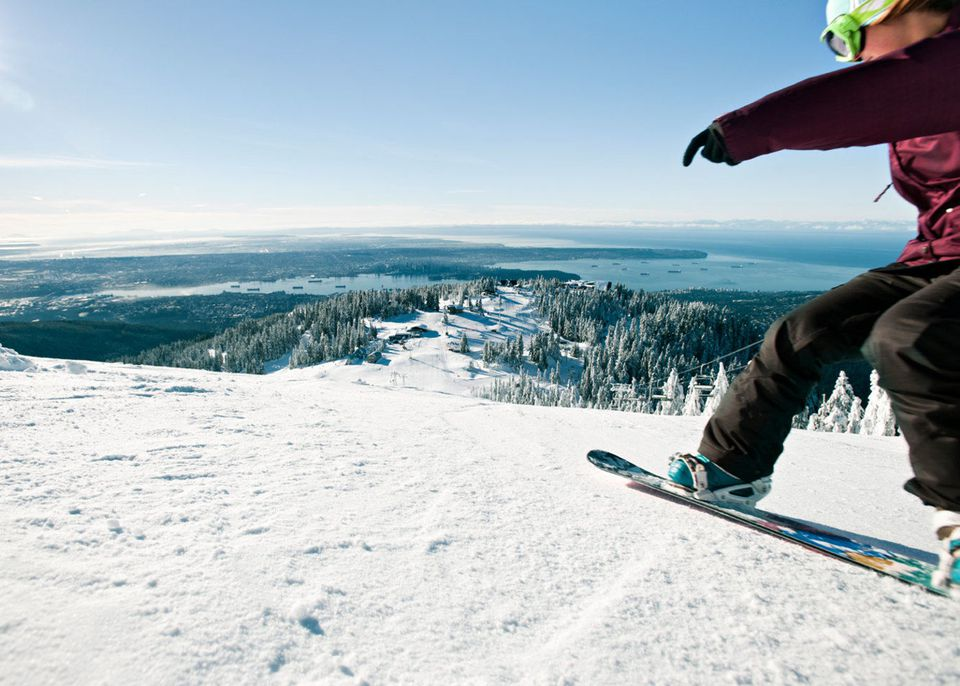

Welcome
They said it best... "You are gorgeous, baby, you are sophisticated, you live well...Vancouver is Manhattan with mountains. It is a liquid city, a tomorrow city, equal parts India, China, England, France and the Pacific Northwest. It is the cool North American sibling." -The New York Times
Skiing & Snowboarding

Grouse Mountain
Cypress Mountain
Whistler
Mount Seymour
Whale Watching
Cypress Mountain
Whistler
Mount Seymour
Whale Watching
srom March to October each year, thousands of whales migrate through the waters near Vancouver, making it one of the world’s best locations for whale watching. See our photos below to get an idea of what you’ll see on your upcoming whale watching trip. A number of tour operators offer whale watching expeditions around the Gulf and San Juan islands, so you can spot pods of whales from a high-speed zodiac, fully-equipped cruiser, kayak or seaplane.

Hiking Around Vancouver
<<<<<<< HEADJust a 30-minute drive from downtown, Lighthouse Park in West Vancouver offers numerous easy hikes through some of the oldest-growth Douglas fir trees in the region. The entire park is off-leash for dogs, making it a favourite place for dog walking on the North Shore. Many of the trails pass by the waterfront, and elevation gain is minimal, although there are several steep drop-offs at certain areas. Maps are available at both kiosks in the parking area, and visitors are asked to stay on the trails. Take the 15-minute walk to Starboat Cove, which is a great picnic spot with a view that extends from the Lions Gate Bridge to the University of British Columbia all the way to Vancouver Island.
 =======
>>>>>>> 2d67583bdd15db34d20402d2bb692b19a5b3b31a
=======
>>>>>>> 2d67583bdd15db34d20402d2bb692b19a5b3b31a